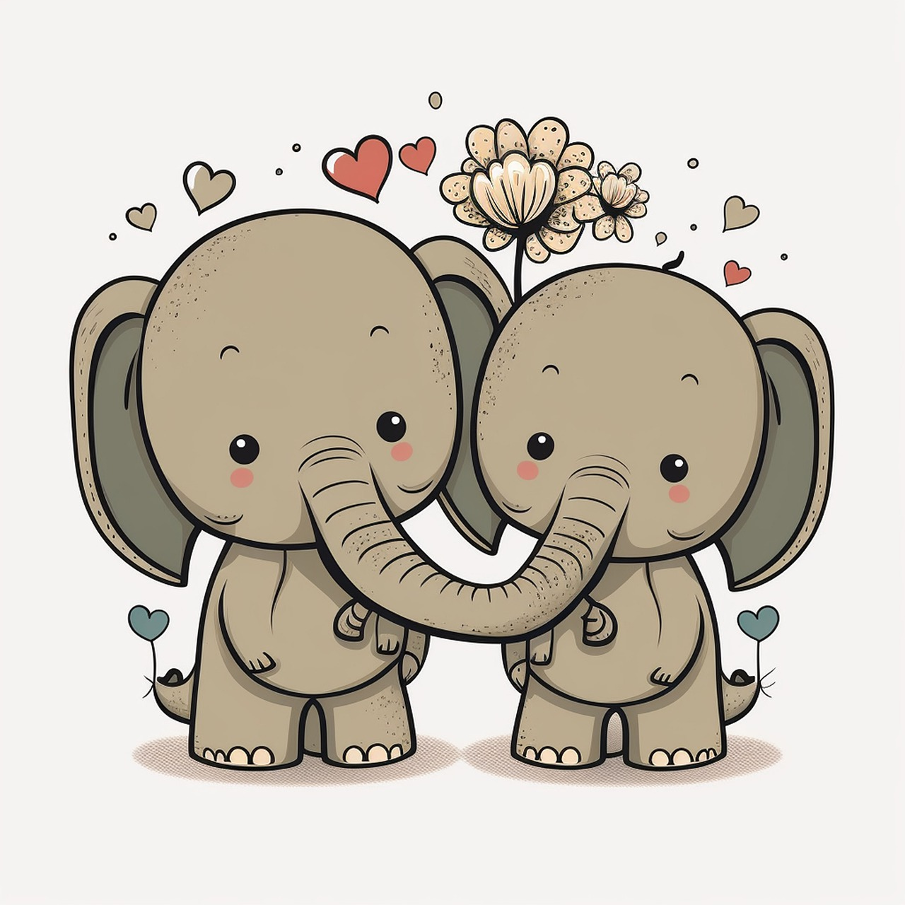

Your Missions
Stop Ivory Trade
An estimated 100,000 elephants were killed for their ivory in Africa between 2010 and 2012. The number of elephants remaining in Africa is uncertain, but are likely to be in the region of 500,000. Taking into account births these losses are driving declines in the world’s wild African elephants on the order of 2-3% a year. The ivory trade is fuelling organised crime and insecurity as traffickers smuggle tusks through the same networks as other high value illegal goods such as drugs.


Stop Habitat Loss
When farms are established where elephants are used to roaming they become a target for crop-raiding by hungry elephants. A year’s crop can be wiped out in a single night, creating understandable resentment. Both farmers and elephants can be wounded or killed in the conflict that ensues. Pressure from livestock grazing in elephant rangeland is also mounting, impacting the amount of food available for elephants and increasing the chances of herders being attacked by nervous elephants.
Stop Habitat Fragmentation
With an increasing human population comes infrastructure development. Roads, railways, piplelines and human settlements can all form barriers to wildlife movements, fragmenting habitats into ever smaller areas. Without corridors to link these islands of habitat, herds can have trouble reaching food and water at certain times of year. They may also be separated from other elephant groups, decreasing their breeding opportunities.
Stop Habitat Overgrazing
When grazing goes unchecked, it can quickly eliminate grass in an area. This means less food for both livestock and wildlife, including elephants, and leads to soil erosion that impacts the growth of grass in the future. It is important to identify and allocate grazing land for livestock away from wildlife areas, unless tight controls can be established.
Volunteer Opportunities
Join us at the Toronto Wildlife Maple Leaf Elephant Sanctuary, in which we have partnered with passionate coordinators to allow sympathatic volunteers to help the elephants with adjusting to life in the Sanctuary until they are healthy enough to live out in the wild again.
Donate
The funds provided from elephant lovers allows us to work better and quicker. We can upgrade ammenities and provide higher level care for the elephants using more advanced health care technology. Moreover we can upgrade surveillance equipment which we use to monitor elephants overseas and protect them from poachers.
Announcements
Poop Cleaning
Elephant poop has began to pile up. Scheduled poop cleaning is taking place at 9AM tomorrow morning.
Esmarelda has given birth to her second baby elephant. She is adorable!
Trending
@BigEaredBrothers
Won the elephant tag team race
@HungryHenry
Won the apple tree picking competition
@SwimmingSally
Won the 100m front stroke race
@slowStantley
Won the 1st grade math competition